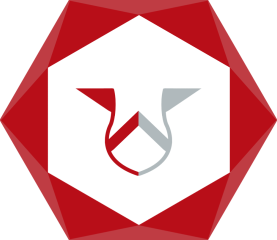
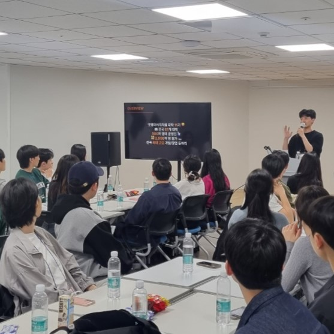
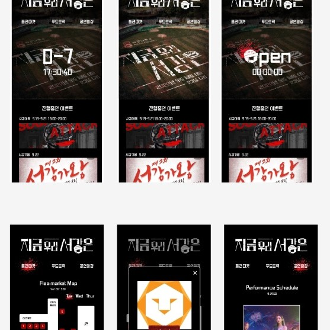
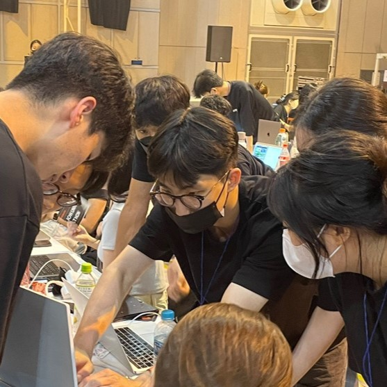

LIKELION
SOGANG
Home
About
Contact Us
POSSIBILITY TO REALITY
꿈꾸는 자들에게 가능성을
현실로 구현하기 위한 도구를 제공합니다.

체계적인 웹 교육
중앙 멋쟁이사자처럼에서 제공하는 체계적인 강의와 멋쟁이사자처럼 서강대학교 운영진만의 심화 세션을 통해 웹 서비스에 대한 이해도를 높입니다.

실제 서비스 개발
웹 서비스 지식을 기반으로 실제 웹서비스를 제작해봅니다. 멋쟁이사자처럼 서강대학교에서는 전통적으로 서강대학교 축제 웹사이트를 제작해왔습니다.

전국구 규모 대회 참가
프론트와 백엔드로 팀을 꾸려서 중앙 멋쟁이사자처럼과 신촌 대학교 멋쟁이사자처럼의 해커톤에 참여합니다.
CONTACT US!